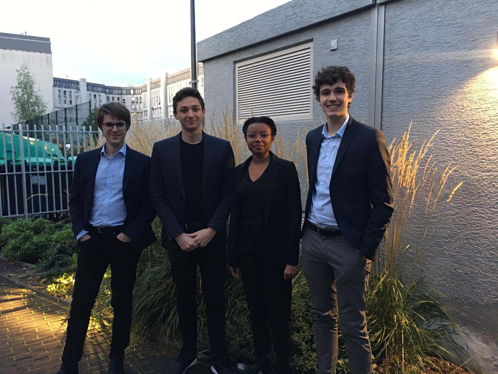

Qui sommes-nous?

Présentation
Je suis la seule fille du groupe. Avant d’ˆetre `a Epita, j’ai cod ́e un peu notamment grˆace`a l’option Informatique et Sciences du num ́erique avec les langages de programmationtels que HTML, CSS et le C. N’ ́etant pas une grande joueuse de jeu vid ́eo, ce projet estpour moi un r ́eel d ́efi puisque le monde du jeu vid ́eo m’est presque totalement ́etranger.N ́eanmoins, j’aime pouvoir d ́ecouvrir un nouveau milieu (celui des ”gamers”), apprendrede nouvelles techniques (utilisation de UNITY) et cr ́eer un projet (conception du jeu).Le jeu est pour nous une opportunit ́e d’apprendre un g ́erer un projet en ́equipe, qui estun atout dans le milieu professionnel. L’industrie du jeu ́etant tr`es importante de nosjours,on peut se rendre compte partiellement du travail que constitue la cr ́eation d’un jeu.
Arrive a EPITA en S1# en F ́evrier, ce projet est totalement nouveau pour moi. J’aivraiment le goˆut pour le travail d’ ́equipe, ce sont les projets r ́ealis ́e durant les ann ́ees depremi`ere et terminale en Sciences de l’ing ́enieur qui m’on r ́ev ́el ́e mon goˆut et mon aptitudepour le travail multidisciplinaire et le travail de groupe. Mon parcours scolaire qui m’amener vers EPITA fut assez atypique. J’ai pass ́e 5 ans dans une ́ecole internationaleAm ́ericaine en Indon ́esie, puis 3 ans dans une ́ecole bilingue `a la Cit ́e Scolaire Internationalede Lyon. Cela m’a permis de parler Anglais couramment et m’a donner l’envie de voyageret d’avoir une carri`ere internationale. Mes comp ́etences en programmation repose sur lepeu que j’ai acquis en Sciences de l’ing ́enieur pendant mes ann ́ees de lyc ́ee et ce que j’aiappris en S1#
Curieux et avide de connaissances,j’aime exp ́erimenter de nouvelles choses et ainsi deme lancer dans des projets plutˆot stimulants. Faisant preuve d’une ouverture d’espritremarquable, j’ai eu la chance de pouvoir d ́ecouvrir le monde (notamment par des voyages,j’ai visit ́e 36 pays dont 5 o`u j’ai pu vivre). ́Ecrivain `a mes heures perdues (des fanfictionsen particulier), l’expression de ma cr ́eativit ́e s’illustre dans le d ́eveloppement informatique.Pour moi, cr ́eer un jeu vid ́eo est une occasion de me challenger et de travailler en ́equipe.
Avant tout attir ́e par les projets, c’est dans cet objectif que j’ai int ́egr ́e l’EPITA enseptembre 2018. En effet, la plupart des choses que j’entreprends se font sous la forme deprojet (voyage `a l’ ́etranger, projet solidaire). Mais c’est en arrivant `a l’EPITA que monambition s’est r ́ev ́el ́e. C’est donc tout naturellement que je me suis propos ́e en tant quechef de projet. J’aime aider et guider les gens dans leur travail. Je n’ai pas de comp ́etenceparticuli`ere en programmation. J’ai donc tout `a apprendre !
Tâches effectuées
Conseils
Jouer dès maintenant à Reborn!
Reborn?